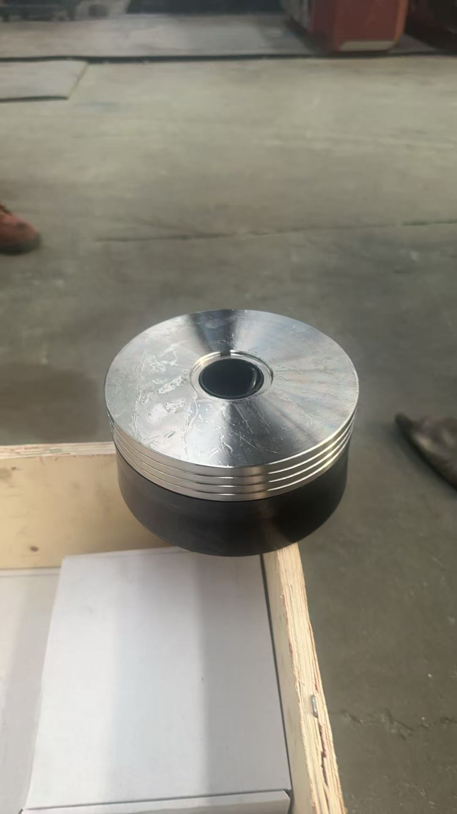
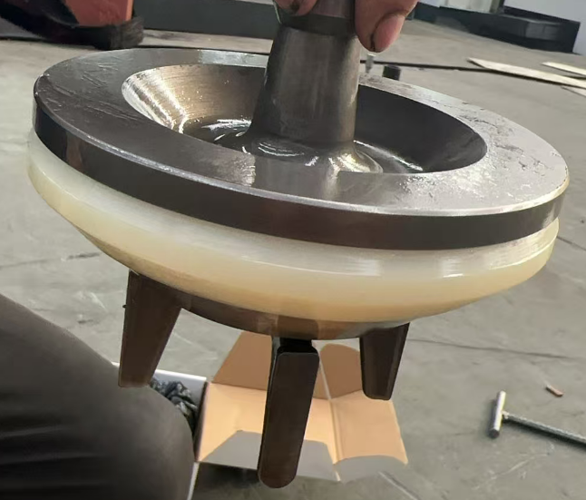
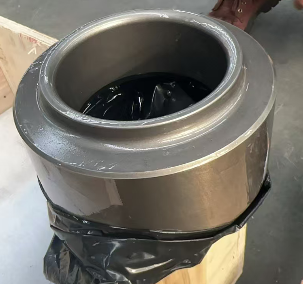
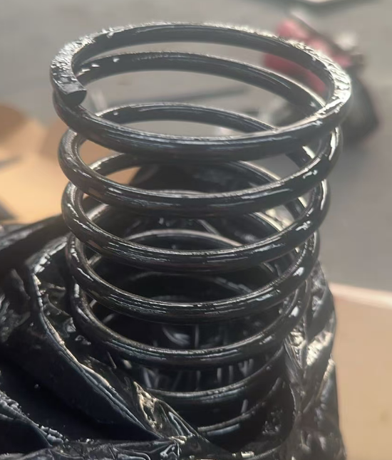

Beijing, China — CHINA KOMAL INTERNATIONAL CO., LTD. has completed a shipment of fluid end expendable parts for a LeTourneau WH-1612 triplex mud pump to a Middle East drilling operator. The order includes a full set of high-wear fluid end components manufactured to API 7K standards, supporting the client's ongoing drilling operations.




Scope of Supply
The shipment covers a comprehensive range of fluid end expendables for the WH-1612 pump, including liners in two sizes, piston assemblies, piston rubber kits, and valve components.
- Liner, 7" — EL205
- Liner, 6½" — EL186
- Piston Assembly, 6½" — EP118
- Piston Assembly, 7" — EP150
- Piston Rubber Kit, 6½" — EP116
- Piston Rubber Kit, 7" — EP147
- Valve Complete — EV178
- Valve Seat — EV190
- Valve Insert — EV142
- Valve Spring — EV116
📦 Shipment Overview
Pump Model: LeTourneau WH-1612 Triplex (1,600 HP / 12" stroke)
Destination: Middle East drilling operations
Quality Standard: API 7K compliant
About the LeTourneau WH-1612
The LeTourneau WH-1612 is a 1,600 HP triplex mud pump with a 12-inch stroke, widely deployed in heavy drilling operations globally. The model designation "1612" reflects its core specs — 1,600 HP continuous duty with a 12" stroke. It delivers discharge pressures up to approximately 7,500 PSI in a horizontal skid-mounted configuration.
Originally designed by LeTourneau Technologies (founded by industry pioneer R. G. LeTourneau), the WH-1612 remains in active service worldwide. Demand for quality API 7K replacement fluid end components continues to be strong, particularly in the Middle East where drilling activity remains elevated.
Commitment to Reliability
"This shipment reflects our commitment to delivering the right parts, at the right quality, on time," said the CHINA KOMAL team. "The Middle East is a strategically important market, and we are proud to support regional drilling operations with reliable fluid end solutions."
CHINA KOMAL stocks replacement parts for major pump brands including LeTourneau, National, EMSCO, Gardner Denver, Ideco, and Oilwell. All fluid end components are sourced from qualified partners and inspected to API specifications.
Need Mud Pump Parts?
CHINA KOMAL supplies API-quality fluid end components for LeTourneau and all major mud pump brands. Contact our team for quotations and lead times.
Request a Quote →About CHINA KOMAL: China Komal International Technology Co., Ltd. has been a trusted supplier of oilfield equipment and drilling consumables since 2010, serving clients in the Middle East, Americas, Southeast Asia, and beyond.
Published: May 15, 2026